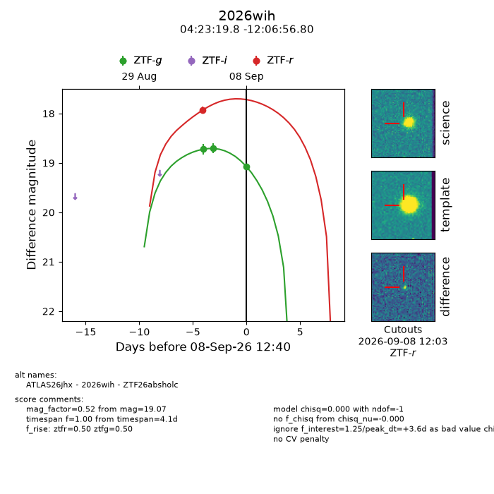
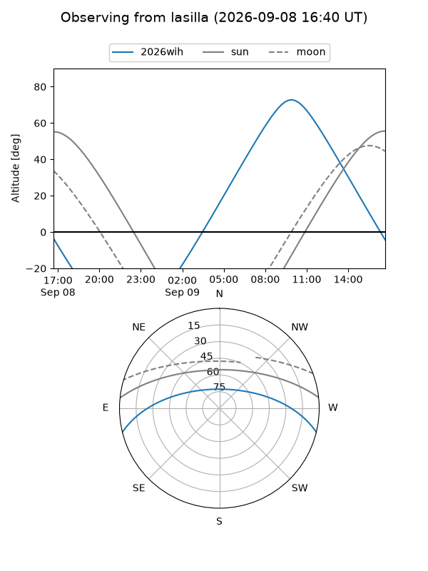
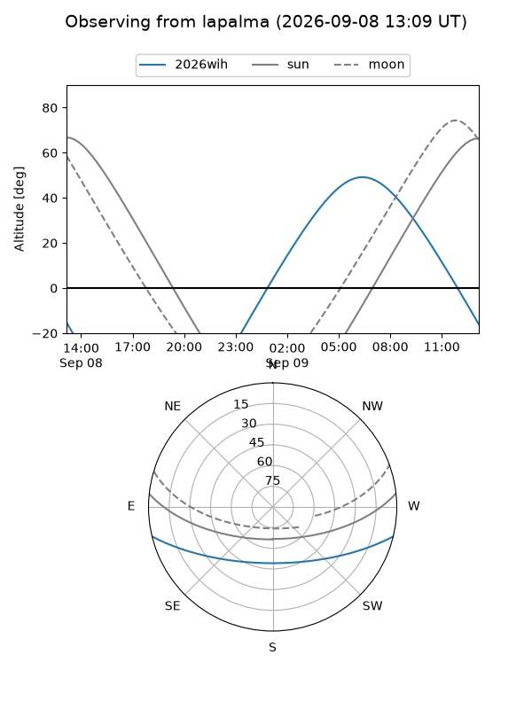
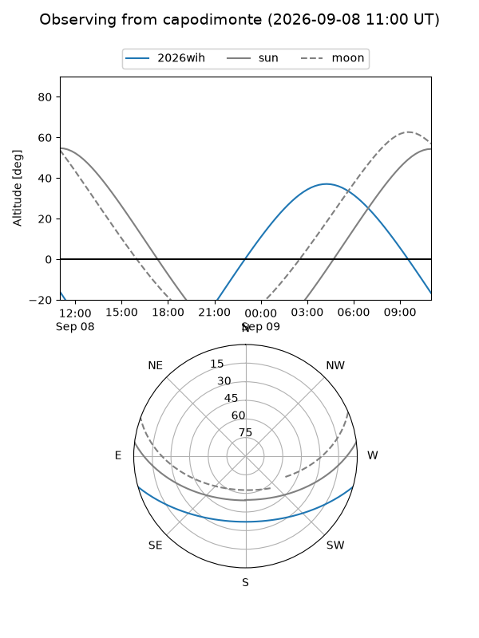
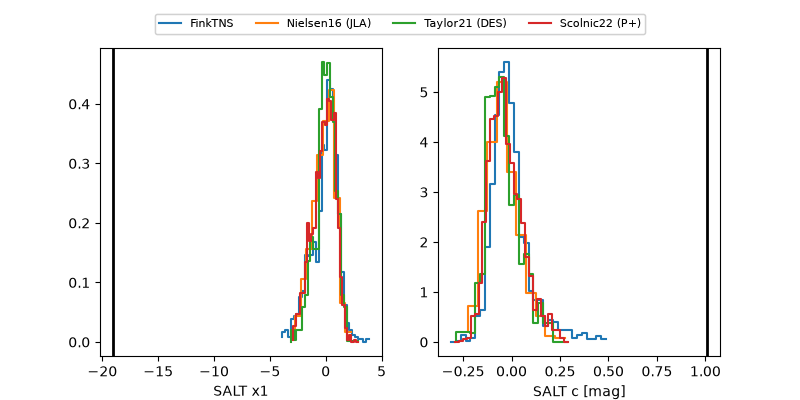

2026wih
Target 2026wih at 2026-09-08 12:42
Aliases and brokers:
FINK-ZTF: ztf.fink-portal.org/ZTF26absholc
Lasair-ZTF: lasair-ztf.lsst.ac.uk/objects/ZTF26absholc
ALeRCE-ZTF: alerce.online/object/ZTF26absholc
YSE-PZ: ziggy.ucolick.org/yse/transient_detail/2026wih
TNS name: wis-tns.org/object/2026wih
Direct TNS query: direct search
alt names
ZTF26absholc (ztf,fink_ztf)
2026wih (tns,yse)
ATLAS26jhx (atlas)
Coordinates:
equatorial (ra, dec) = 65.8326,-12.11578
equatorial (HMS+DMS) = 04:23:19.83,-12:06:56.80
galactic (l, b) = (206.9585,-38.29488)
Flags:
TNS type: nan
peak dt: +3.6
Photometry:
last ztfg=19.07, ztfr=17.93
3 ztfg, 1 ztfr detections
Lightcurve

Visibility



Additional plots
